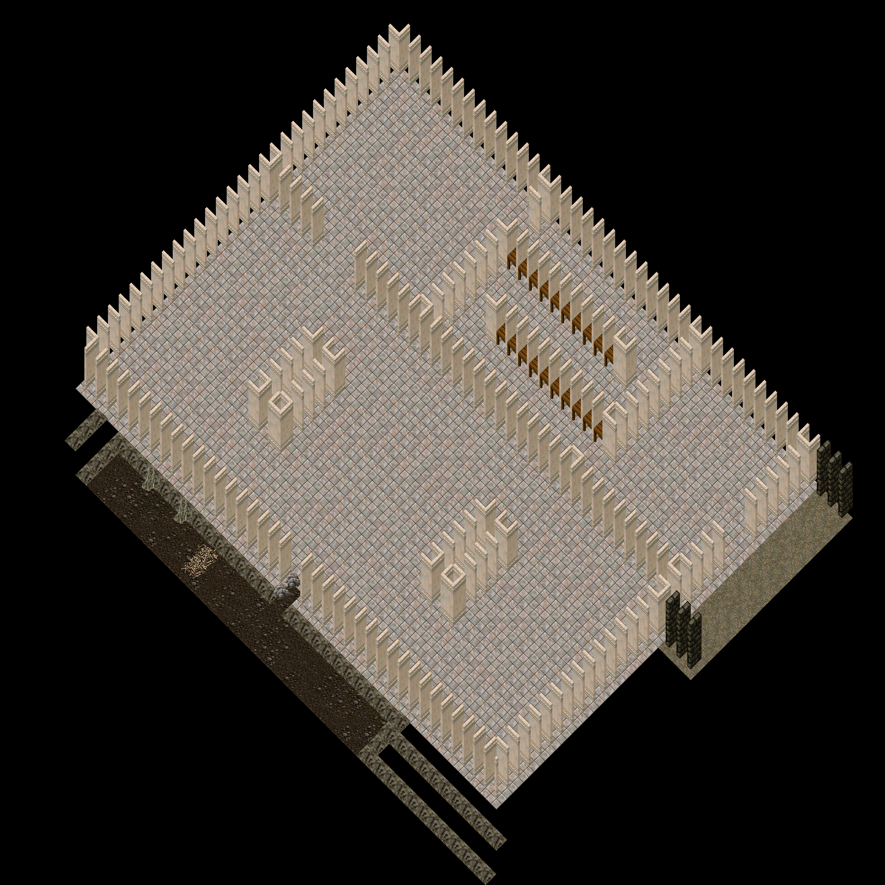

cc-P180, 2026-10-19. P141's approved layout built into a scratch copy of Trammel (outside both repos); nothing has touched the real map files. Drawn by notes/cc-P167-tools/isorender.py from the real tiles with the client's layout (statics on the land diamond's bottom, sloped land drawn with its texture; no hues, no lighting). Round 1 (2026-10-18) is kept in round1/.
| Round 1 (not approved) | Round 2 |
|---|---|
 | |
Each row is one wall set: a 5 x 5 room and an L-shaped room built by the builder's wall rule, then OSI rooms from the stock map and a house design, then the same set as built in the Burrows. The OSI rooms: Deceit (Trammel 5184-5191 x 535-546 and 5188-5200 x 556-570), Nujel'm (3672-3696 x 1231-1247, roofed) with the large marble house multi 0x96, Terathan Keep (5467-5479 x 3128-3140, two storeys) with the tower house multi 0x7A. More OSI renders and the statics dumps behind the rules are in notes/art/wall-research/.

The Stacks as bookcases (0x0A97, 0x0A99, 0x0A9B, 0x0A9D mixed), x 5156-5168, y 1135 and 1139. Say bookcases, counters, or something else.
The Terathan stone set's north-south doorway is two pieces over a 2-tile gap (0x01D8 passable half on the first open tile, 0x01D9 jamb half on the wall tile after the gap: Terathan Keep 5431,3132-3134 and the tower house multi 0x7A both do it that way). The approved mouth is 3 tiles (y 1246-1248), so (a) keeps all three open and puts the jamb one tile further south, leaving the arch top open in the middle; (b) is OSI's 2-tile doorway, which would close 5183,1248. (a) is what the Gloom render shows. Say (a), (b), or no arch.

A cave ring as it is: rock at floor level, +12, then the void at +20 (Crawl Den NW corner). Impassable sloped land, as OSI's caves; no wall items on top (they would block sight and spells like the item-walled zones do).
The Vault doorway at 5179,1137-1138 with no door. The region refuses non-trainees at the tile; a door item would have to do the same.

x 5174-5209, y 1128-1166 (36 x 39 tiles). The Landing (safe), the arrival, the ankh wall, the Vault doorway at x 5179, and the tunnel south to the Warren. 480 KB

x 5138-5182, y 1128-1164 (45 x 37 tiles). The Vault (tutorial only): Counting Room, the Stacks with its bookcase rows (proposal), Deposit Hall, the Strongroom with its two walled pillars, the crawlway in the south wall at x 5160. 565 KB
x 5140-5190, y 1158-1200 (51 x 43 tiles). The Warren, west: Crawl Den (the crawlway lands at 5160,1162) and the Great Burrow west half. 966 KB

x 5182-5244, y 1158-1198 (63 x 41 tiles). The Warren, east: Tunnel Foot (the landing tunnel lands here), the Great Burrow east half, and the Brood Pit through its mouth at x 5209-5211. 904 KB

x 5138-5196, y 1194-1236 (59 x 43 tiles). The Tangle (tier 2): the root cavern with its five rock-and-log root masses, the Thicket behind its gap at x 5157, the passage east to the Dawnseam. 1016 KB

x 5190-5246, y 1194-1236 (57 x 43 tiles). The Dawnseam (tier 2): the crystal seam with its five crystal clusters, the Seam Heart behind its gap at x 5227. 778 KB

x 5146-5201, y 1226-1264 (56 x 39 tiles). The Gloom, west half (tier 3): the descent from the Tangle, the ring tunnels, two web masses, the lair mouth at x 5183 with the proposed arch and webs. 708 KB

x 5190-5240, y 1226-1264 (51 x 39 tiles). The Gloom, east half: the descent from the Dawnseam, the Queen's lair with its two web pillars, the east and south runs. 665 KB

Every static placed is in notes/cc-P167-tools/statics-placed.csv; land by id and Z in land-summary.csv; the rules (seeds, weights, clusters, proposals) in plan-sets.json; the builder is build_burrows.py, the renders render_burrows.py and isorender.py.